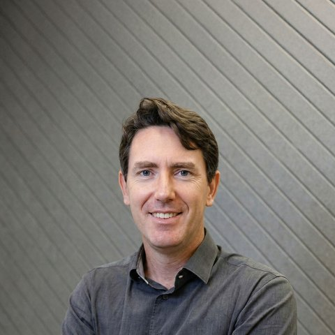

M8 - Navegação autônoma
Prof. Nicola
Equipe

Rodrigo Nicola
Orientação
Fabiana Iegawa
Computação

Murilo Zanini
Computação
Jefferson Silva
Computação

Diogo Morais
Matemática
Mariana Vicente
Design
Rafael Donaire
Negócios

Filipe Gonçalves
Liderança
← Linha 11
Linha 12 →
↑ Metrô
Saída ↗
← Elevador
?
1,5 milhão
de passageiros por dia útil
Posso ajudar?
Autoatendimento
Inspirado no quiosque Ask Me, do Aeroporto de Istambul
Posso ajudar?
Robô de serviço
Trilhas de Computação
Navegação
- ROS 2 e Nav2
- Mapas e localização
- SLAM
Algoritmos
- Representação de grafos
- Busca em grafos
- Caminhos mínimos
Linguagem
- Embeddings
- Redes recorrentes
- Atenção e transformer
Navegação
Algoritmos
Linguagem
Nota individual
=
Nota do grupo
0 a 10
×
FP
0 a 1
FP =
Prazos
Semana da entrega
QUINTA
Entrega da sprint
23h59
SEXTA
Review com o parceiro
Semana seguinte
SEGUNDA
Validação na orientação
ou
TERÇA
Validação no dev
Semana das notas
SEGUNDA
Notas publicadas
QUINTA
Revisão
Revisão da validação
Segunda-feira da semana das notas
Junto com a publicação das notas, cada aluno recebe a sua validação de aprendizagem corrigida.
Até quarta-feira, véspera da revisão
Quem quiser revisar manda um pedido pelo Slack, já com a argumentação: o que quer revisar e por quê.
Quinta-feira, no período de autoestudo
Conversa presencial e rápida sobre o pedido enviado. Chego preparado: o que vale é a argumentação do pedido.
Depois da conversa
O pedido é deferido, indeferido ou fica em investigação, quando o caso precisa ser analisado com mais cuidado.
Como validar um desafio
Antes de começar
Escolha um desafio e me avise que vai trabalhar nele, contando a estratégia de solução que pretende seguir. Posso marcar uma mentoria para ajudar.
Durante o desenvolvimento
Desenvolva a solução e escreva o resultado como short paper, no template que vou fornecer.
Pelo Slack
Envie o short paper com uma mensagem dizendo por que o trabalho é uma inovação e onde você acha que podemos publicá-lo.
Mérito da entrega
Avalio o mérito e decido o próximo passo. Rejeição e mentoria permitem reentrega.
Está boa → arguição
Abaixo do desafio → rejeição
Falta refinar → mentoria
Presencial
Faço perguntas técnicas sobre o seu trabalho e sobre os conteúdos do módulo. Se eu sair insatisfeito, nego o pedido ou marco uma nova data para você se preparar melhor.
Desafio aprovado
Você escolhe as duas notas que serão alteradas. O trabalho provavelmente é publicável: vamos atrás da publicação, que também rende horas complementares.
Contrato social do grupo
Acompanhado em cada retrospectiva
Semana 1
| seg 12/10 | Feriado | ||
| ter 13/10 | Feriado | ||
| qua 14/10 | | Onboarding e Sprint Planning 1 | Orientação |
| qui 15/10 | Introdução à Navegação Autônoma | Computação | |
| sex 16/10 | | Workshop com o parceiro | Orientação |
Semana 2
| seg 19/10 | Do Golem aos Androides | Design | |
| ter 20/10 | O mercado de robôs autônomos | Negócios | |
| qua 21/10 | Feedforward em Redes Neurais | Matemática | |
| qui 22/10 | | Representação de grafos | Computação |
| sex 23/10 | | Entrega da Sprint 1 | Orientação |
ROS 2 Jazzy
Ubuntu 24.04 LTS